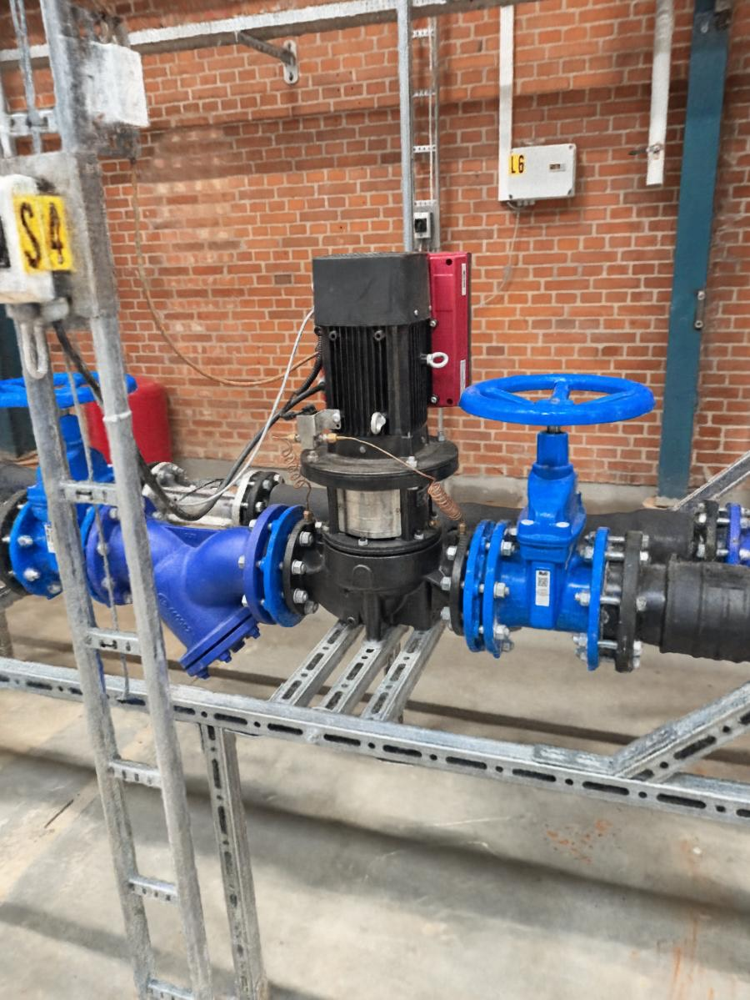
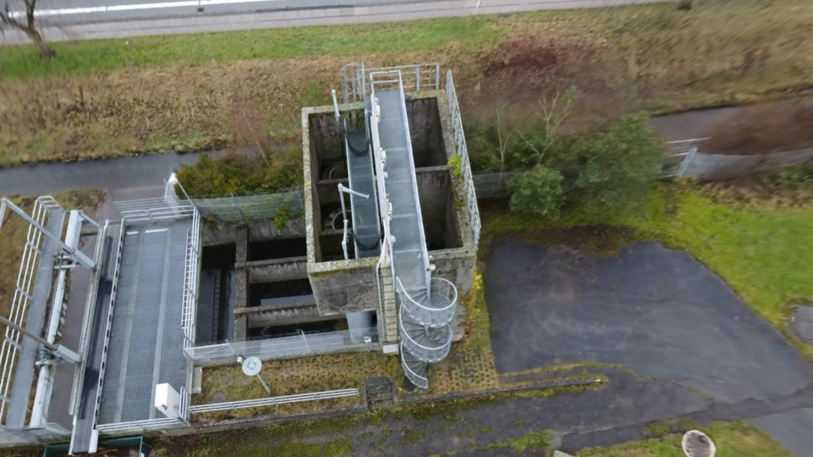

MGE
Pump installation · February 2023
Tech
Conference talks on bringing extended reality and 3D scanning into the manufacturing world, followed by a few of my own captures you can explore in 3D.
Conference talks, demos and industry discussions with SynergyXR on reality capture and immersive technology at Grundfos.
Photogrammetry and NeRF-based 3D scanning with Luma AI, turning real spaces and objects into interactive 3D scenes. Drag to look around.

Pump installation · February 2023

Captured from above · October 2023
Each scene loads from Luma as you scroll to it. Prefer a full window? MGE and Hillerød on Luma.